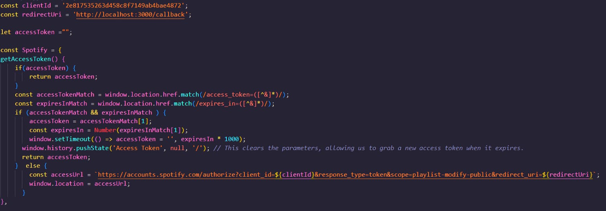
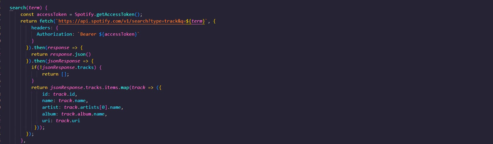
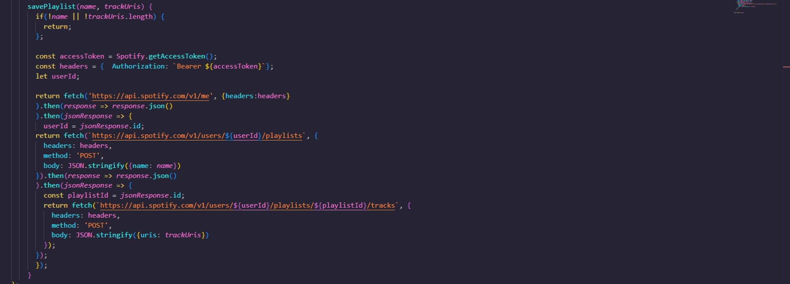

App Component
The App component contains all other components. This file also contains all the hooks that will be passed down through out the app. These include the “searchResults” array and the “playlistTracks” array. The former is a list of songs acquired using the “search” hook the latter is an array of songs that have been added via the “addTrack” hook. The other hooks in this file are “updatePlaylistName”, “removeTrack” and “savePlaylist”

Search Results Component
The SearchResults component is rendered on the left side of the screen and presents the list of songs acquired by the “search” hook. It does this by rendering a TrackList component and passes on two props; “onAdd” and “searchResults”.TrackList takes these props and renders a Track for each item in the “searchResults” array and passes down “onAdd” which is how the user is able to add each track to the new playlist.

Playlist Component
The PlayList component is rendered on the right side of the screen and presents the items in the “playlistTracks” array which are added through the “addTrack” hook, the songs originally come from the “searchResults” array. It does this by rendering a TrackList component and passes on three props; “onRemove” , “playlistTracks” and “isRemoval”. takes these props and renders a Track for each item in the “playlistTracks” array and passes down “onRemove” which is how the user is able to remove each track from the new playlist. The “isRemoval” prop is used to determine which element the Track component render, if it’s value is true “-“ is shown and if it is false “+” is shown.

Asynchronous Logic
To handle all the asynchronous logic I created a file called “spotify.js”. Spotify uses the Auth 2.0 authentication system meaning that for every request I’m going to need to generate a new token, the logic for this can be found in the first function “getAccessToken()”.
The second function is what will handle my searches and accepts a search term as an argument, it will use said term when making it’s fetch request and use the token granted by “getAccessToken()” as the value for the header object’s authorization key. It will then convert the response into a JSON object.
The final function in this module is the “savePlaylist” function which takes in two arguments, a name and the track uris . within the function body it follows three steps. Step one is identifying the users Spotify account and saving it as a variable. Step two is creating a playlist on said account and saving its Id as a variable and using the first argument to name it. Step 3 is using the two previous variables
